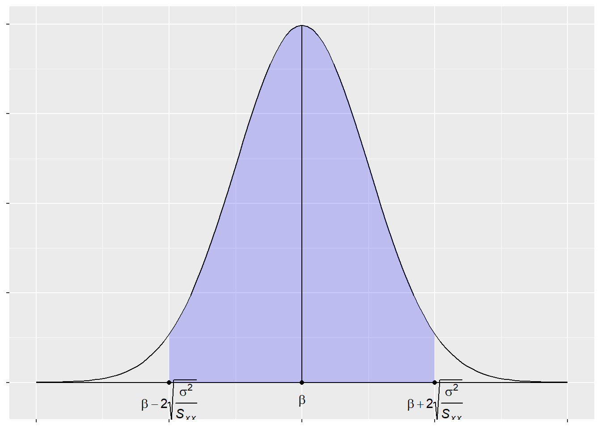
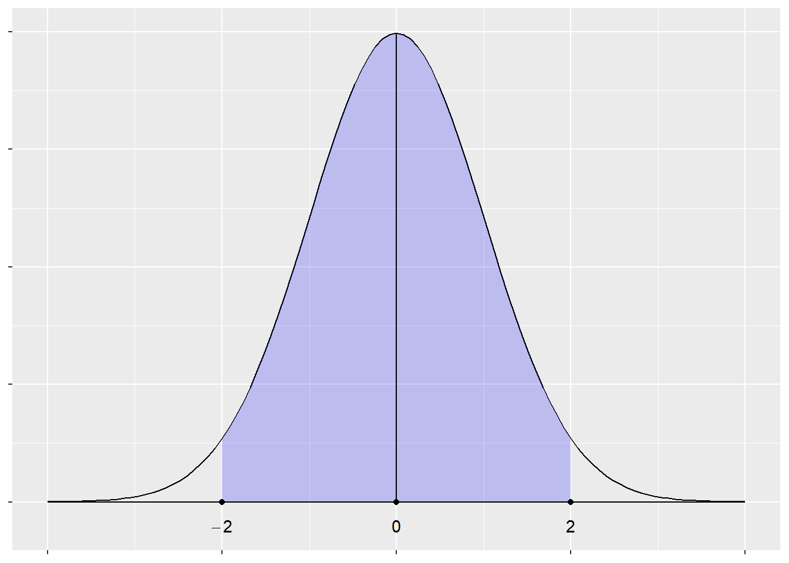
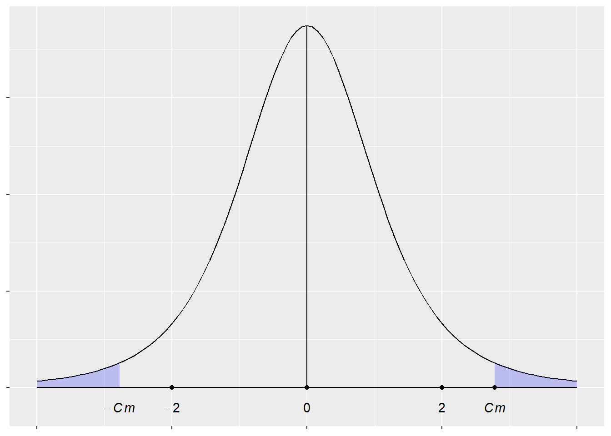

この遠隔講義では、講義ノート第6章「統計的推論」に進みます。以下は第4章と同じ内容をwebに掲載したものです。ただし、練習問題を追加しております。PDFを読む方が勉強しやすいと思います。（Rのコードは任意ですので、興味がなければ読み飛ばせばよいです。)
講義ノート第6章を自習しながら、分からないところをノートにまとめて下さい。後ほど、こちらから連絡致しますので、分からないところ中心に解説することを予定しております。最後に、練習問題を解いて、期限を決めて提出してもらおうと考えております。
それでは、講義ノート第4章を学習しましょう。
区間推定
真のモデルを \[ y_{i}=\alpha+\beta x_{i}+u_{i} \] とする。誤差項は正規分布に従い、 \[ u_{i}\sim N\left( 0,\sigma^{2}\right) \] を仮定する。このとき、OLSによるパラメータ推定値\(\hat{\beta}\)は \[ \hat{\beta}=\beta+\frac{\sum u_{i}\left( x_{i}-\overline{x}\right)}{S_{xx}} \] と表される。ただし、\(S_{xx}=\sum x_{i}^{2}-n\overline{x}^{2}\)である。\(E\left( \hat{\beta}\right) =\beta\)より\(\hat{\beta}\)は真のパラメータである\(\beta\)を平均に持ち、また\(E\left(\hat{\beta}-\beta\right)^{2}=\sigma^{2}/S_{xx}\)であることから分散\(\sigma^{2}/S_{xx}\)を持つ。\(\hat{\beta}\)は\(u_{i}\)の一次結合であり、よって\(\hat{\beta}\)も正規分布に従い、 \[ \hat{\beta}\sim N\left( \beta,\frac{\sigma^{2}}{S_{xx}}\right) \] と表現できる。
いま、誤差項の分散\(\sigma^{2}\)の値が分かっているものとする。一方で、真の平均\(\beta\)の値は分からないとする。\(\hat{\beta}\)が正規分布に従うこと、かつその分散が\(\sigma^{2}/S_{xx}\)であることから、真の平均がどのような値をとりうるかを確率的に推測することができる。それを「区間推定」と呼ぶ。
\(\hat{\beta}\)が正規分布に従うならば、未知の平均\(\beta\)に対して、\(\hat{\beta}\)は95％の確率で次の範囲の値を生じうる。 \[ P\left( \beta-2\sqrt{\frac{\sigma^{2}}{S_{xx}}}<\hat{\beta}<\beta +2\sqrt{\frac{\sigma^{2}}{S_{xx}}}\right) \simeq.95 \tag{1} \] このとき、95％の確率で生じうる\(\hat{\beta}\)の値の下限は\(\beta-2\sqrt{\sigma^{2}/S_{xx}}<\hat{\beta}\)より\(\beta<\hat{\beta}+2\sqrt{\sigma^{2}/S_{xx}}\)と書き直すことができる。他方、その上限は\(\hat{\beta}<\beta+2\sqrt{\sigma^{2}/S_{xx}}\)より\(\hat{\beta}-2\sqrt{\sigma^{2}/S_{xx}}<\beta\)と書き直すことができる。よって、(1)式は以下の確率に関する式を同様に満たす。 \[ P\left( \hat{\beta}-2\sqrt{\frac{\sigma^{2}}{S_{xx}}}<\beta <\hat{\beta}+2\sqrt{\frac{\sigma^{2}}{S_{xx}}}\right) \simeq.95 \tag{2} \]
誤差項の分散が\(\sigma^{2}=4\)と既に分かっており、説明変数\(x_{i}\)から計算できる\(S_{xx}\)を\(16\)だとする。これより、\(\hat{\beta}\)の分散も既知で\(\sigma^{2}/S_{xx}=1/4\)となる。観測される変数\(y_{i}\)、\(x_{i}\)を用いてOLSにより計算したところ、\(\hat{\beta}=3.5\)が得られたとする。\(\hat{\beta}-2\sqrt{\sigma^{2}/S_{xx}}=2.5\)、\(\hat{\beta}+2\sqrt{\sigma^{2}/S_{xx}}=4.5\)より、未知の平均\(\beta\)は95％の確率で \[ 2.5<\beta<4.5 \] の範囲に存在すると推測できる。このような推測を真の平均\(\beta\)に関する「95％の区間推定」と呼ぶ。2.5から4.5の幅を「95％の信頼区間」と呼ぶ。
以下の図は、\(\hat{\beta} \sim N \left( \beta,\frac{\sigma^2}{S_{xx}} \right)\)の分布を、95％の信頼区間で塗りつぶしたものである。
library(ggplot2)
limitRange <- function(fun, min, max) {
function(x) {
y <- fun(x)
y[x < min | x > max] <- NA
return(y)
}
}
tr<-"italic( beta + 2*sqrt( frac(sigma^2,S[xx]) ) )"
tl<-"italic( beta - 2*sqrt( frac(sigma^2,S[xx]) ) )"
p <- ggplot(data.frame(x=c(-4, 4)), aes(x=x))
p + stat_function(fun = dnorm) +
stat_function(fun = limitRange(dnorm, -2, 2),
geom="area", fill="blue", alpha=0.2)+
geom_line(data=data.frame(x=c(-4, 4)),aes(x=x,y=0))+
geom_line(data=data.frame(y=c(0, dnorm(0))),aes(x=0,y=y))+
geom_point(data=data.frame(),aes(x=2,y=0))+
annotate("text",label=tr,x=2,y=-.02,parse=TRUE)+
geom_point(data=data.frame(),aes(x=-2,y=0))+
annotate("text",label=tl,x=-2,y=-.02,parse=TRUE)+
geom_point(data=data.frame(),aes(x=0,y=0))+
annotate("text",label="italic(beta)",x=0,y=-.02,parse=TRUE)+
theme(axis.text = element_blank(),
axis.title = element_blank())
仮説検定
回帰分析において、真の\(\beta\)は分からない。そこで、真の\(\beta\)の値について例えば次のような仮説： \[ "\beta=5" \] を立てるならば、どのような統計的推論ができるだろうか。もし仮説が正しく\(\beta=5\)ならば、\(\hat{\beta}\)の実現値（OLSによる推定値）について、「このような値は95％の確率で起こり得る」、あるいは「このような値は95％の確率で起こらないはずだ」などと確率を前提にして考えることができる。ここでは\(\hat{\beta}\)の分散は\(\sigma^{2}/S_{xx}=1/4\)だと分かっているものとする。仮説\(\beta=5\)が正しければ、\(\hat{\beta}\sim N\left( 5,\frac{1}{4}\right)\)に従い、95％の信頼区間は \[ P\left( 5-2\cdot\frac{1}{2}<\hat{\beta}<5+2\cdot\frac{1}{2}\right) \simeq.95 \] と表すことができる。
95％の確率で信じるならば、\(\beta=5\)とする仮説の下では\(4<\hat{\beta}<6\)であり、もし仮説が正しければ\(\hat{\beta}\)の実現値はこの範囲で現われるはずと考えることができる。上述の通り、OLSによる計算から\(\hat{\beta}=3.5\)を得たとする。仮説の下では\(4<\hat{\beta}<6\)であり、\(\hat{\beta}=3.5\)が生じる可能性は極めて低い。すなわち、仮説である「\(\beta=5\)」とその実現値である「\(\hat{\beta}=3.5\)」とは確率的に矛盾する関係にある。未知である真の\(\beta\)に対して仮説を立て、その実現値\(\hat{\beta}\)を用い、仮説が誤りか否かを統計的推論により判断することを「仮説検定」と呼ぶ。\(\beta=5\)のような仮説は「帰無仮説」と呼ばれ、 \[ H_{0}:\beta=5 \] と表現される。
95％の確信の下で、以上の帰無仮説が導く実現値の範囲は\(4<\hat{\beta}<6\)であり、\(\hat{\beta}=3.5\)が出ることは考えにくいため、「\(\beta=5\)」という仮説を立てたことが誤っていたと判断する。このとき、帰無仮説：\(\beta=5\)を「棄却する」という。反対に、例えば\(\hat{\beta}=4.7\)を得たとする。このとき、帰無仮説と\(\hat{\beta}=4.7\)とは矛盾せず、これより仮説は誤りではなかろうと判断する。これを指して、帰無仮説を「受容する」という。
帰無仮説である\(\beta=5\)が「正しい」と断言しない理由は次の通りである。例えば帰無仮説を「\(\beta=5.1\)」とする。同じ分散の下で、95％の信頼区間は\(4.1<\hat{\beta}<5.1\)であり、この帰無仮説の下でも\(\hat{\beta}=4.7\)は生じうる。すなわち、帰無仮説：\(\beta=5\)は棄却されないが、他にも棄却されない仮説の候補は存在し、以上の検定から真の平均が\(\beta=5\)であると断定することはできないからである。
確率変数の標準化による検定
確率変数\(w\)が正規分布\(N\left(\mu,\sigma^{2}\right)\)に従うとき、定義より\(E\left(w\right)=\mu\)、\(E\left(w-\mu\right)^2=\sigma^2\)である。ここで、新たな確率変数\(z\)を次のように定義する： \[ z=\frac{w-\mu}{\sigma} \tag{3} \] このとき、\(z\)の平均は \[ \begin{aligned} E\left( z\right) & =E\left( \frac{w-\mu}{\sigma}\right) \\ & =\frac{1}{\sigma}\left[ E\left( w\right) -\mu\right] =0\end{aligned} \] であり、分散は \[ \begin{aligned} E\left( z^{2}\right) & =E\left(\frac{w-\mu}{\sigma}\right)^2\\ & =\frac{1}{\sigma^2}E\left(w-\mu\right)^2=1 \end{aligned} \] である。すなわち、\(z\)は標準正規分布\(N\left(0,1\right)\)に従う。(3)式のような変換を「標準化変換」、または「\(z\)変換」と呼ぶ。
以下の図は標準正規分布\(z \sim N(0,1)\)を、95％の信頼区間で塗りつぶしたものである。
p + stat_function(fun = dnorm) +
stat_function(fun = limitRange(dnorm, -2, 2),
geom="area", fill="blue", alpha=0.2)+
geom_line(data=data.frame(x=c(-4, 4)),aes(x=x,y=0))+
geom_line(data=data.frame(y=c(0, dnorm(0))),aes(x=0,y=y))+
geom_point(data=data.frame(),aes(x=2,y=0))+
annotate("text",label="2",x=2,y=-.02,parse=TRUE)+
geom_point(data=data.frame(),aes(x=-2,y=0))+
annotate("text",label="-2",x=-2,y=-.02,parse=TRUE)+
geom_point(data=data.frame(),aes(x=0,y=0))+
annotate("text",label="0",x=0,y=-.02,parse=TRUE)+
theme(axis.text = element_blank(),
axis.title = element_blank())
帰無仮説\(\beta=5\)の下で、\(\hat{\beta}\)の分散が既知で\(1/4\)ならば、\(\hat{\beta}\)は正規分布\(N\left(5,\frac{1}{4}\right)\)に従う確率変数と表せる。ここで、 \[ z=\frac{\hat{\beta}-\beta}{\sqrt{\frac{\sigma^{2}}{S_{xx}}}} \] と標準化する。帰無仮説の下で、\(z\)は標準正規分布\(N\left( 0,1\right)\)に従うはずである。このとき、95％の確信の下で以上の帰無仮説が導く\(z\)の範囲は\(-2<z<2\)と考えられる。上の例では \[ z=\frac{3.5-5}{\sqrt{\frac{1}{4}}}=-3 \] であり、帰無仮説の下で計算された\(z=-3\)は95％の信頼区間に入らない。帰無仮説の下で\(\hat{\beta}\)を標準化し、標準正規分布の\(\theta\)％の信頼区間を定めて仮説検定を行うことを「\(\left(1-\theta\right)\)％の有意性検定」と呼ぶ。信頼区間の左右の外側を表す確率\(\left(1-\theta\right)\)％を「有意水準」と呼ぶ。この例では、帰無仮説「\(\beta=5\)」は有意水準5％で棄却されたという。
分散未知の仮説検定
確率変数\(\hat{\beta}\)について真の平均\(\beta\)のみならず分散も分からない場合、以上の仮説検定に正規分布を用いることができないことが確率統計では知られている。\(\hat{\beta}\)の真の分散を知らず、その代用として分散をデータから推定する場合、推定される分散は定数ではなく、カイ二乗分布に従う確率変数となる。その誤差により\(\hat{\beta}\)は正規分布には従わず、より裾幅の広い別の分布に従うことが知られている。その確率分布を「スチューデントの\(t\)分布」と呼ぶ。
\(t\)分布は正規分布と同じく左右対称であるが、標本数の自由度によって分布の形状が変化する。自由度が小さければ推定分散の誤差により\(t\)分布の裾は正規分布よりも広く、自由度が大きければ分布の裾は狭まり、極限で正規分布に一致する。正確に言えば、\(t\)分布が極限で一致するのは標準正規分布である。すなわち、分散が未知である\(\hat{\beta}\)についてそれを標準化した確率変数は正規分布には従わず、「自由度\(m\)の\(t\)分布」に従う。
\(\hat{\beta}\)の分散は\(\sigma^{2}/S_{xx}\)であり、誤差項\(u_{i}\)の分散\(\sigma^{2}\)が既知ならば、平均\(\beta\)が未知であっても\(\hat{\beta}\)は正規分布に従う。未知の平均\(\beta\)を用いて標準化すれば \[ z=\frac{\hat{\beta}-\beta}{\sqrt{\frac{\sigma^{2}}{S_{xx}}}} \] となり、\(z\sim N\left( 0,1\right)\)と表すことができる。95％の信頼区間は標本数にかかわらず、以下を満たす。 \[ P\left( -2<z<2\right) \simeq .95 \]
一方、誤差項の分散が未知のとき、その分散をOLSの残差\(\hat{u}_{i}\)から不偏推定すれば、その推定量\(s^{2}\)は次式に従う。 \[ s^{2}=\frac{\sum\hat{u}_{i}^{2}}{n-2} \tag{4} \] (4)式で求めた値を真の\(\sigma^{2}\)の代わりとして用い、また未知の平均\(\beta\)を用いて標準化すれば \[ z_{s}=\frac{\hat{\beta}-\beta}{\sqrt{\frac{s^{2}}{S_{xx}}}} \] と書ける。このとき、\(z_{s}\)は未知の平均\(\beta\)の下で自由度\(n-2\)の\(t\)分布に従い、\(z_{s}\sim t\left(0,1,n-2\right)\)と表すことができる。
正規分布とは異なり、\(t\)分布の95％の信頼区間の境界は自由度\(m\)によって変化する。 \[ P\left( -C_{m}<z_{s}<C_{m}\right) \simeq.95 \] \(m\)が小さいほど境界\(C_{m}\)は広く、\(C_{2}=4.30265\)、\(C_{3}=3.18245\)、\(C_{4}=2.77645\)というように自由度の増加によって\(t\)分布の信頼区間は狭まり、正規分布の信頼区間に近づいてゆく。自由度\(m\)について、\(P\left(-C_{m}<z_{s}<C_{m}\right) \simeq.\theta \%\) で表される信頼区間の境界\(C_{m}\)の外側を「棄却域」と呼ぶ。標準化された確率変数\(z_{s}\)が\(t\)分布に従うことを前提とし、自由度\(m\)の95％の信頼区間により棄却域\(C_{m}<\left\vert z_{s}\right\vert\)を定めて検定することを、「有意水準5％の\(t\)検定」という。同様に、99％の信頼区間により検定することを「有意水準1％の\(t\)検定」という。
以下の図は自由度\(m\)の\(t\)分布について、棄却域を塗りつぶしたものである。
cmr <- qt(0.975, df=4)
cml <- qt(0.025, df=4)
ggplot(NULL, aes(x = c(-4, 4))) +
# T-distribution with 4 degrees of freedom
# Non-significant area
stat_function(fun=dt,args=list(df=4),
geom="line",xlim=c(-4,4))+
# Significant area
stat_function(fun=dt,args=list(df=4),
geom="area",fill ="blue",alpha=.2,xlim=c(cmr,4))+
stat_function(fun=dt,args=list(df=4),
geom="area",fill ="blue",alpha=.2,xlim=c(-4,cml))+
xlim(-4, 4)+
geom_line(data=data.frame(x=c(-4, 4)),aes(x=x,y=0))+
geom_line(data=data.frame(y=c(0, dt(0,4))),aes(x=0,y=y))+
geom_point(data=data.frame(),aes(x=2,y=0))+
annotate("text",label="2",x=2,y=-.02,parse=TRUE)+
geom_point(data=data.frame(),aes(x=-2,y=0))+
annotate("text",label="-2",x=-2,y=-.02,parse=TRUE)+
geom_point(data=data.frame(),aes(x=0,y=0))+
annotate("text",label="0",x=0,y=-.02,parse=TRUE)+
geom_point(data=data.frame(),aes(x=2,y=0))+
annotate("text",label="italic(Cm)",x=cmr,y=-.02,parse=TRUE)+
geom_point(data=data.frame(),aes(x=cmr,y=0))+
annotate("text",label="italic(-Cm)",x=cml,y=-.02,
parse=TRUE)+
theme(axis.text=element_blank(),axis.title=element_blank())
練習問題
以下の問題の解答を作成し提出せよ。
問1 手元にある体温計には次のような誤差がある。誤差は正規分布をしており、平均は0、標準偏差は0.4（単位は\(^\circ \rm C\)）とする。
(i) 本当は36.5\(^\circ \rm C\)の人が、誤差のせいで37.0\(^\circ \rm C\)以上と測定されてしまう確率はいくらか。
(ii) 本当は38.0\(^\circ \rm C\)の人が、誤差のせいで37.0\(^\circ \rm C\)未満と測定されてしまう確率はいくらか。
問2 100個のデータからなる標本について調べたところ、標本の平均は8.2、標準偏差は4だったとする。 (i) 母集団の平均が含まれる95%の信頼区間を求めよ。
(ii) 95%の信頼区間を現在の半分にするには、標本数はいくら必要か。
問4 6章に関連する練習問題を二つ作成し、解答を沿えよ。